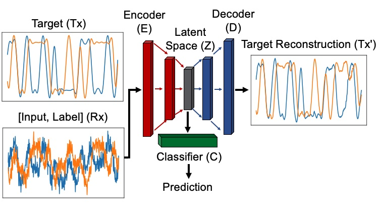
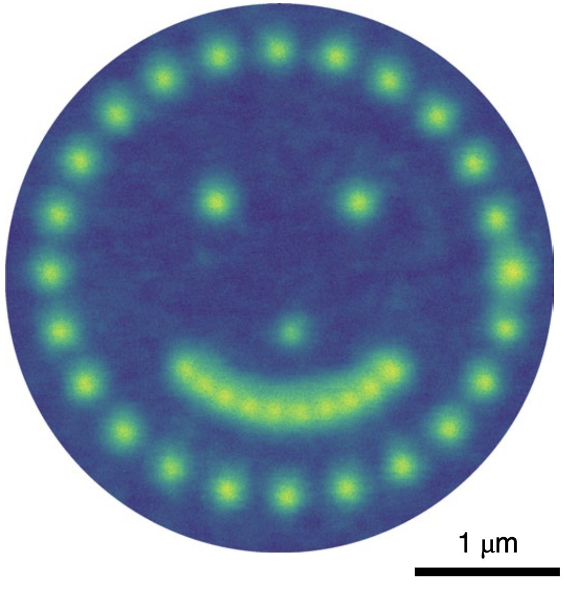
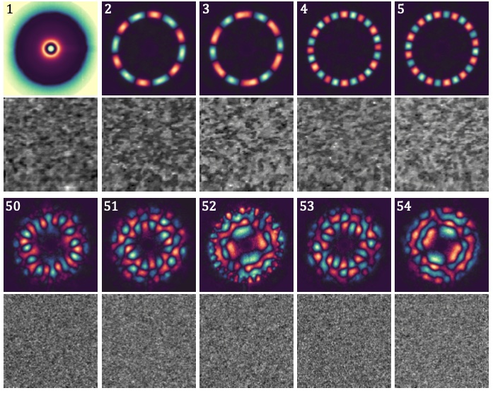

AI/ML for Radio Frequency Communications
Radio Frequency (RF) communications are the backbone of modern wireless technology, enabling everything from mobile phones to satellite communications. Digital Signal Processing (DSP) is a fundamental component of RF systems, allowing for efficient transmission, reception, and interpretation of complex signals in noisy environments.
We demonstrate the powerful application of physics-informed AI/ML models to physical layer DSP tasks for RF communications, showing that deep learning models traditionally used for computer vision and natural language processing can also be implemented to solve critical RF/DSP tasks including channel correction, signal demodulation, and adaptive modulation and coding.
This work bridges the gap between AI/ML methods and the specialized requirements of RF by leveraging the strengths of established deep learning architectures and incorporating domain-specific knowledge from RF physics and DSP, paving the way for more intelligent and robust wireless networks.
Ph.D. Research
Solid-State Single Photon Sources
Single photon emitters (SPEs) are quantum light sources capable of generating individual photons on demand, making them crucial for advancing quantum technologies such as quantum computing, communication, and cryptography. Solid-state SPEs are promising candidates for qubits because of their stability, scalability, and potential for room-temperature operation.
This research utilizes a combination of advanced hyperspectral and
By discovering and characterizing new color centers, exploring novel capabilities of existing color centers in devices, and elucidating the underlying mecahnisms of the emitters, this work contributes to the development of next-generation quantum devices and the furthers the field of quantum information science.
Hyperspectral Imaging and ML for Nanomaterials Characterization
Characterization of exotic nanomaterial systems—including nanoparticles, thin films, nanotubes, and aerogels— using electron and photon-based techniques was a major component of multiple projects throughout my PhD research. Central to this work was the application of hyperspectral imaging, where each pixel contains data from multiple channels, providing a wealth of information about the underlying physics of the system under study.
The high-dimensional nature of hyperspectral image data necessitates the use of novel data analysis methodologies. Various unsupervised machine learning techniques, such as dimensional reduction and clustering, prove highly effective for a wide range of data analysis tasks, enabling deeper insights into complex nanomaterial systems.